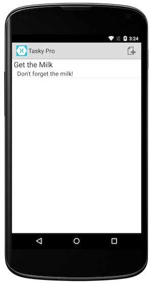
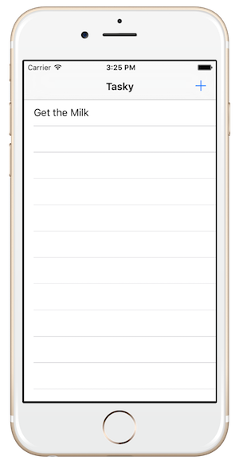
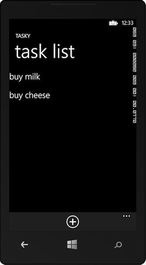

Duration
15 minutes
Goals
In this exercise we will build and run the included Tasky Pro application. If possible, you should try to build both the iOS and Android versions. This will ensure you have your development environment setup properly and prepare you for your Xamarin University education. If you have already succesfully built/compiled a Xamarin application then you can skip this exercise.
|  |  |
|  | |
TaskyPro is a simple cross-platform todo/task application sample that allows you to track todo tasks. It illustrates cross-platform code-sharing for the data and business logic layers and separates out the User Interface and Application Layer into appropriate platform-specific applications.
Required assets
The provided Part 01 Resources folder contains a subfolder named TaskyPro with the solution you will need to complete this lab exercise. The supplied solution includes C# based projects for iOS, Android and Windows.
Running the code
When executing the program, you can test on a real device, or on the emulator / simulator.
- To setup a device, see iOS Device Provisioning and Setting up your Android Device for Development.
- To learn how to use the iOS simulator, see Interacting with the Simulator.
- For a faster Android emulator experience, see Accelerating your Android Emulators.
Steps
Select the IDE environment you want to work with: Xamarin Studio on Mac/Windows or Visual Studio on Windows
Loading the Solution into Xamarin Studio
Let's start by loading the prepared solution into Xamarin Studio. You can use either Windows or Mac OS X, just be aware that you will only be able to build and execute the Android project on Windows.
- Open the TaskyPro.sln solution contained in the Part 01 Resources/TaskyPro folder. This solution contains four projects, take a moment to familiarize yourself with each one.
- Select which version (iOS or Android) you want to run by right-clicking on the project, or clicking the gear icon to the right of the project, and selecting Set as Startup Project from the context menu. The startup project is always shown in Bold text in the Solution Explorer.
- Set the Build Configuration to be Debug and select a simulator or emulator from the drop down in the Toolbar.
- Build and run the application by clicking the Play button in the Toolbar. In this example, we are running it using the iOS Simulator, however if you have the Android project selected, you can run it on the Android Emulator, or even on a physical iOS or Android device if you have one configured for development.
- The application should launch and display an empty task list. You can add new tasks through the (+) button, and tap on entered tasks to display details.
- Repeat the same steps for the other environment(s) you want to test on - change the startup project, build and run the application.
| Project | Description |
|---|---|
| Tasky.Core | This is a Portable Class Library which contains the code that is shared across all the supported platforms (iOS, Android and Windows). The code is all written in C# and is where almost all the actual business logic and data models used in the application is stored. |
| Tasky.Droid | This is the Xamarin.Android project which can be deployed onto an Android device or emulator (KitKat - 4.4 or later). Use this project to test your Android setup. |
| Tasky.iOS | This is the Xamarin.iOS project which can be deployed onto an iOS device or simulator (iOS 8.0 or later). Use this project to test your iOS setup. This project will be disabled if you are building on Windows. |
| Tasky.Windows | This is the Microsoft Windows Store 8 project which can be deployed onto Windows 8 or later. This project is supplied to demonstrate sharing logic with the Windows platform. It can only be compiled and run on Windows with Visual Studio and will be disabled in the Xamarin Studio environment. |
| Tasky.WinPhone | This is the Microsoft Windows Phone 8.1 project which can be deployed onto a Windows Phone 8.1 device or emulator. This project is supplied to demonstrate sharing logic with the Windows platform. It can only be compiled and run on Windows with Visual Studio and will be disabled in the Xamarin Studio environment. |
| Tasky.UWP | This is the Microsoft Windows Universal project which can be deployed onto devices running Windows 10. This project is supplied to demonstrate sharing logic with the Universal Windows Platform. It can only be compiled and run on Windows with Visual Studio and will be disabled in the Xamarin Studio environment. |


Loading the Solution into Visual Studio
Let's start by loading the prepared solution into Visual Studio on Windows.
- Open the TaskyPro.sln solution contained in the Part 01 Resources/TaskyPro folder. This solution contains four projects, take a moment to familiarize yourself with each one.
- Select which version (iOS or Android) you want to run by right-clicking on the project and selecting Set as Startup Project from the context menu. The startup project is always shown in Bold text in the Solution Explorer.
- Set the Build Configuration to be Debug and select a simulator or emulator from the drop down in the Toolbar.
- Build and run the application by clicking the Play button in the Toolbar. In this example, we are running it using the Android Emulator, but if you have the iOS project selected then you can run it on the iOS Simulator, or even on a physical iOS or Android device if you have one configured for development.
- The application should launch and display an empty task list. You can add new tasks through the (+) button, and tap on entered tasks to display details.
- Repeat the same steps for the other environment(s) you want to test on - change the startup project, build and run the application.
| Project | Description |
|---|---|
| Tasky.Core | This is a Portable Class Library which contains the code that is shared across all the platforms (iOS, Android and Windows Phone). The code is all written in C# and is where almost all the actual business logic and data models used in the application is stored. |
| Tasky.Droid | This is the Xamarin.Android project which can be deployed onto an Android device or emulator (KitKat - 4.4 or later). Use this project to test your Android setup. |
| Tasky.iOS | This is the Xamarin.iOS project which can be deployed onto an iOS device or simulator (iOS 8.0 or later). Use this project to test your iOS setup. This project can only be built if you have established a relationship from your development machine to a Mac build host. If you do not have a Mac available, you can right-click on the project in the Solution Explorer and select "Unload" to remove it. |
| Tasky.WinPhone8 | This is the Microsoft Windows Phone 8.1 project which can be deployed onto a Windows Phone 8.1 device or emulator. This project is supplied to demonstrate sharing logic with the Windows platform. This project can only be built and run if you have the Windows Phone 8.0 and 8.1 SDKs installed. If you do not have these SDKs, it's very likely that Visual Studio will either warn you, or fail to load the project. You can right-click on the project in the Solution Explorer and select "Unload" if necessary to continue on. |


Summary
In this exercise, we built and ran a cross-platform Xamarin application and verified that the Xamarin tools are properly installed on your machine. You saw an example project that uses a variety of .NET classes as well as unique iOS and Android features to display and change presented information.